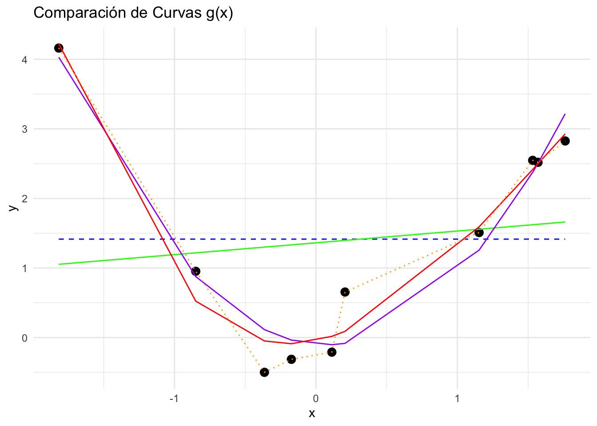
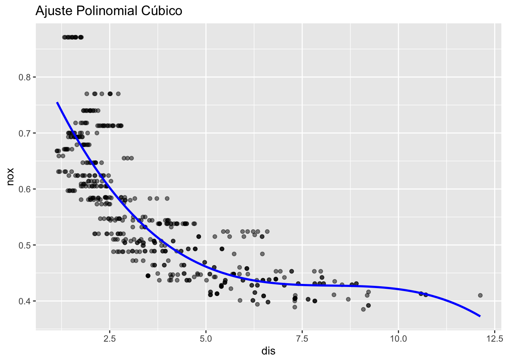
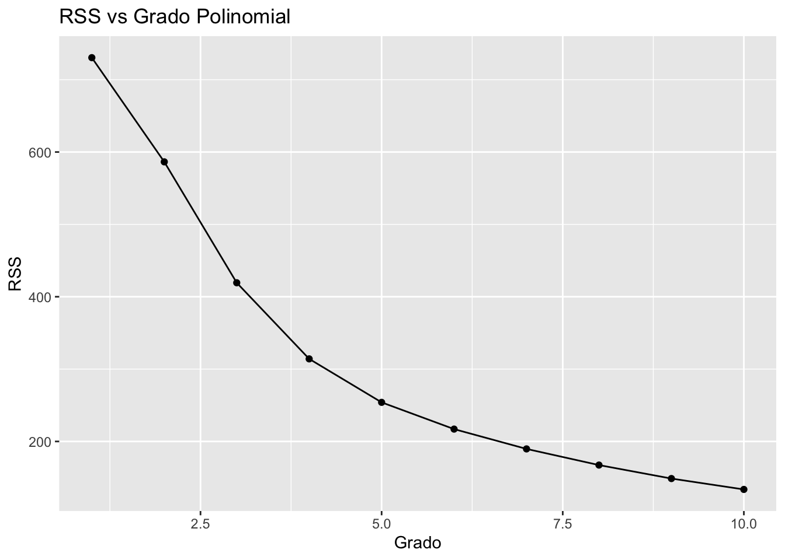
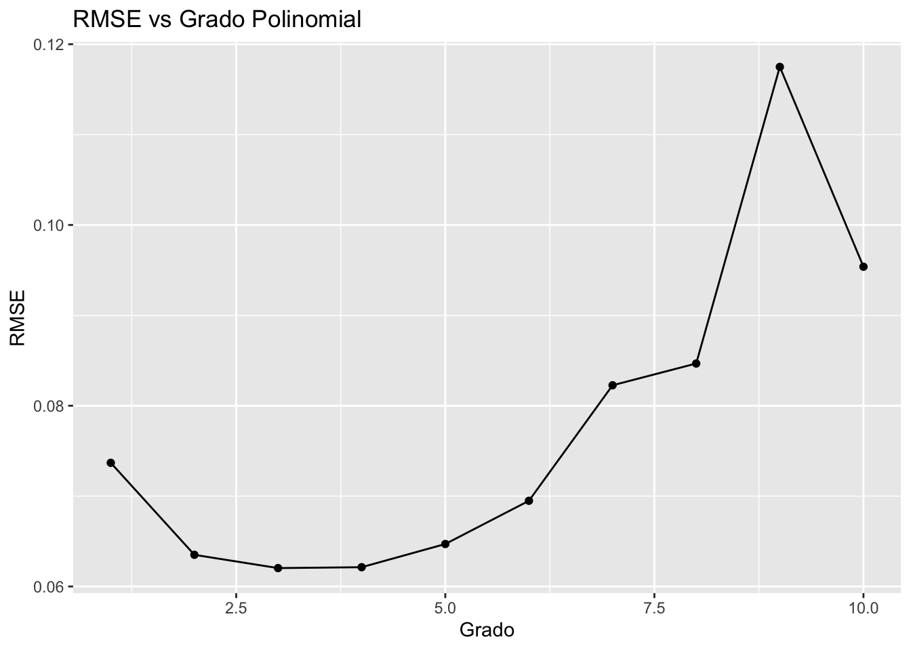
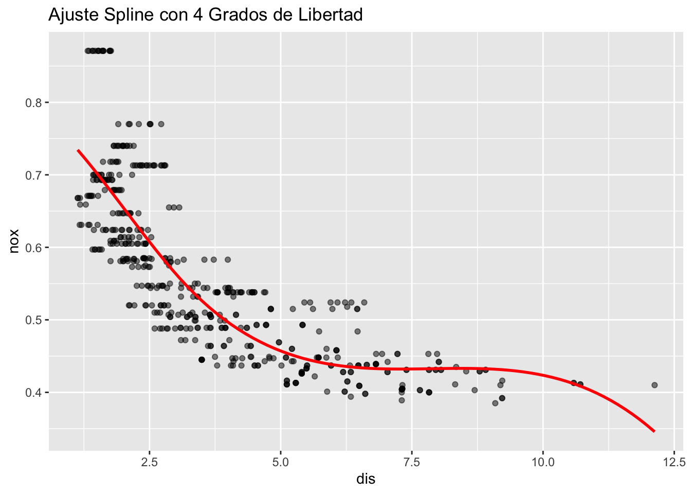
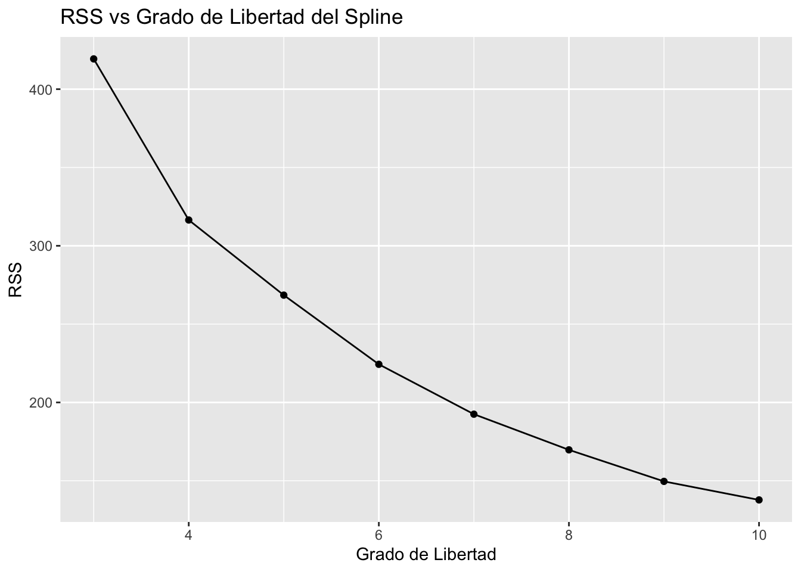

Parte 1: Argumentar que el error esperado de validación es el mismo para \(m\) observaciones o solo 1
Demostramos que el error esperado para \(m\) observaciones es equivalente al error esperado para una observación usando la regla de esperanzas iteradas.
Aquí utilizamos la regla de esperanzas iteradas: \[
E(Z) = E_t\left[ E_v(Z \mid t) \right]
\] donde \(E_t\) considera la aleatoriedad en la muestra de entrenamiento y \(E_v\) en la de validación.
Demostración:
Dado que las observaciones del conjunto de validación \(\{(x'_i, y'_i)\}\) son independientes e idénticamente distribuidas (i.i.d.), y que \(\hat{\beta}\) está fijo dado el conjunto de entrenamiento, podemos escribir:
Calculamos el valor esperado del error de validación promedio: \[
E\left[ \frac{1}{m} \sum_{i=1}^{m} (y'_i - \hat{\beta}^\top x'_i)^2 \right] = \frac{1}{m} \sum_{i=1}^{m} E\left[ (y'_i - \hat{\beta}^\top x'_i)^2 \right]
\]
Debido a la independencia y misma distribución de las observaciones, todos los términos en la suma son iguales: \[
E\left[ (y'_i - \hat{\beta}^\top x'_i)^2 \right] = E\left[ (y'_1 - \hat{\beta}^\top x'_1)^2 \right], \quad \forall i
\]
Por lo tanto, el error esperado de validación para \(m\) observaciones es igual al error esperado para una sola observación.
Parte 2: Definición de las variables aleatorias \(A\) y \(B\)
Definimos las variables \(A\) y \(B\) como: \[
A = \frac{1}{n} \sum_{i=1}^{n} (y_i - \hat{\beta}^\top x_i)^2
\]\[
B = \frac{1}{n} \sum_{i=1}^{n} (y'_i - \tilde{\beta}^\top x'_i)^2
\]
Argumentamos que \(A\) y \(B\) tienen la misma distribución, por lo tanto \(E(A) = E(B)\).
Demostración:
Ambos conjuntos de datos \(\{(x_i, y_i)\}\) y \(\{(x'_i, y'_i)\}\) son muestras independientes del mismo proceso generador de datos.
Los estimadores \(\hat{\beta}\) y \(\tilde{\beta}\) se obtienen ajustando el mismo modelo (por ejemplo, regresión lineal) a sus respectivos conjuntos de datos.
Debido a la simetría en el proceso y a que los datos son i.i.d., las distribuciones de \(A\) y \(B\) son idénticas.
Por lo tanto: \[
E(A) = E(B)
\]
Parte 3: Relación entre \(B\) y el error de validación
Demostramos que \(B\) es siempre menor o igual al error de validación utilizando la desigualdad: \[
B = \frac{1}{n} \sum_{i=1}^{n} (y'_i - \tilde{\beta}^\top x'_i)^2 \leq \frac{1}{n} \sum_{i=1}^{n} (y'_i - \hat{\beta}^\top x'_i)^2
\]
Demostración:
El estimador \(\tilde{\beta}\) se obtiene minimizando el error cuadrático en el conjunto de validación: \[
\tilde{\beta} = \arg\min_{\beta} \frac{1}{n} \sum_{i=1}^{n} (y'_i - \beta^\top x'_i)^2
\]
Por definición de mínimo, tenemos: \[
\frac{1}{n} \sum_{i=1}^{n} (y'_i - \tilde{\beta}^\top x'_i)^2 \leq \frac{1}{n} \sum_{i=1}^{n} (y'_i - \hat{\beta}^\top x'_i)^2
\]
Por lo tanto: \[
B \leq \text{Error de validación con } \hat{\beta}
\]
Parte 4: Conclusión
Usando el resultado anterior, concluimos que el error de entrenamiento es siempre menor o igual al error de validación: \[
E\left[ \frac{1}{n} \sum_{i=1}^{n} (y_i - \hat{\beta}^\top x_i)^2 \right] \leq E\left[ \frac{1}{n} \sum_{i=1}^{n} (y'_i - \hat{\beta}^\top x'_i)^2 \right]
\]
Demostración:
De la Parte 2, sabemos que \(E(A) = E(B)\).
De la Parte 3, tenemos que: \[
B \leq \frac{1}{n} \sum_{i=1}^{n} (y'_i - \hat{\beta}^\top x'_i)^2
\]
Tomando el valor esperado en ambos lados: \[
E(B) \leq E\left[ \frac{1}{n} \sum_{i=1}^{n} (y'_i - \hat{\beta}^\top x'_i)^2 \right]
\]
Esto demuestra que, en promedio, el error de entrenamiento es menor o igual al error de validación, lo cual es coherente con el hecho de que el modelo está ajustado para minimizar el error en el conjunto de entrenamiento y puede no generalizar perfectamente al conjunto de validación.
Ejercicio 2
a) El tamaño muestral \(n\) es extremadamente grande y el número de predictores \(p\) es pequeño
Cuando el tamaño muestral \(n\) es grande y el número de predictores \(p\) es pequeño, generalmente esperamos que un método inflexible tenga mejor performance que un método flexible. Esto es porque un método inflexible, como la regresión lineal, puede capturar bien la verdadera relación entre los predictores y la respuesta cuando \(p\) es pequeño. En este caso, agregar flexibilidad puede incrementar la varianza sin mejorar sustancialmente el sesgo.
b) El número de predictores \(p\) es extremadamente grande y el número de observaciones \(n\) es pequeño
Cuando \(p\) es grande y \(n\) es pequeño, un método flexible suele ser mejor. Esto se debe a que métodos flexibles pueden ajustarse mejor a los datos en situaciones donde hay muchos predictores, capturando relaciones complejas entre ellos y la respuesta. Sin embargo, también pueden sobreajustarse si \(n\) es demasiado pequeño, lo que incrementaría el error por varianza.
c) La relación entre los predictores y la respuesta es marcadamente no lineal
Cuando la relación es no lineal, un método flexible puede capturar mejor esta no linealidad en comparación con un método inflexible. Métodos como los árboles de decisión o las redes neuronales pueden adaptarse mejor a patrones no lineales en los datos, mientras que un método inflexible puede no ser capaz de capturar estas relaciones.
d) La varianza del término de error \(\sigma^2 = V(\epsilon)\) es extremadamente alta
Cuando la varianza del término de error es alta, un método inflexible es preferible porque los métodos flexibles tienden a sobreajustar el ruido en los datos. En situaciones donde hay mucho ruido, un método inflexible, que se centra más en la estructura general, suele ofrecer mejor performance al evitar capturar el ruido.
Ejercicio 3
Ventajas y desventajas de una aproximación flexible vs una menos flexible en regresión o clasificación
Una aproximación más flexible tiene las siguientes ventajas:
Captura mejor relaciones complejas: Los modelos flexibles pueden ajustarse a relaciones no lineales entre predictores y la variable respuesta, lo cual es útil cuando la verdadera relación no es simple.
Menor sesgo: Debido a su capacidad de ajustarse mejor a los datos, los métodos flexibles tienden a tener menor sesgo que los métodos más simples o inflexibles.
Sin embargo, también tienen las siguientes desventajas:
Mayor riesgo de sobreajuste: Un modelo flexible puede ajustarse demasiado bien a los datos de entrenamiento, capturando el ruido, lo que lleva a un peor desempeño en datos nuevos (alta varianza).
Mayor complejidad: Los modelos flexibles tienden a ser más difíciles de interpretar y requieren mayor capacidad computacional.
Por otro lado, una aproximación menos flexible tiene estas ventajas:
Menor riesgo de sobreajuste: Los modelos más simples son menos propensos a ajustarse al ruido presente en los datos, lo que puede conducir a un mejor desempeño en generalización.
Más interpretables: Métodos inflexibles, como la regresión lineal, tienden a ser más fáciles de entender e interpretar.
Pero también tienen las siguientes desventajas:
Mayor sesgo: Un modelo inflexible puede no capturar patrones complejos en los datos, lo que incrementa el error debido al sesgo.
¿Cuándo preferir una aproximación flexible vs menos flexible?
Una aproximación más flexible es preferida cuando la relación entre los predictores y la variable respuesta es compleja y no lineal, y se cuenta con una gran cantidad de datos para mitigar el riesgo de sobreajuste.
Una aproximación menos flexible es preferida cuando se tiene pocos datos o cuando la relación entre los predictores y la respuesta es sencilla o lineal, lo cual disminuye el riesgo de varianza elevada y sobreajuste.
Ejercicio 4
Método de vecino más cercano para clasificación y regresión
Clasificación
En el método de k vecinos más cercanos para clasificación, dado un punto nuevo de datos \(x_0\), el algoritmo encuentra los \(k\) puntos más cercanos a \(x_0\) en el conjunto de entrenamiento. La clase asignada a \(x_0\) es aquella que aparece con mayor frecuencia entre sus \(k\) vecinos más cercanos. Matemáticamente, la clase predicha para \(x_0\) se define como:
donde \(N_k(x_0)\) representa el conjunto de los \(k\) vecinos más cercanos a \(x_0\), y \(y_i\) son las etiquetas de clase correspondientes a esos vecinos.
Ventajas:
Simple de implementar.
No asume una forma particular de la función de decisión.
Desventajas:
Sensible al valor de \(k\).
Requiere calcular distancias a todos los puntos del conjunto de entrenamiento para cada nueva predicción.
Regresión
En el método de k vecinos más cercanos para regresión, en lugar de asignar una clase, se estima un valor numérico continuo. Para un nuevo punto \(x_0\), el valor de la variable de respuesta se predice tomando el promedio de los valores de los \(k\) vecinos más cercanos en el conjunto de entrenamiento. La predicción para \(y_0\) se calcula como:
donde \(N_k(x_0)\) representa el conjunto de los \(k\) vecinos más cercanos a \(x_0\), y \(y_i\) son los valores de la variable de respuesta correspondientes.
Esperanza condicional
Podemos expresar la predicción como una estimación de la esperanza condicional de \(y_0\) dado \(x_0\), bajo la suposición de que puntos cercanos en el espacio predictor tienen valores de respuesta similares. Formalmente, podemos aproximar la esperanza condicional \(E[Y | X = x_0]\) con:
Esto implica que el valor esperado de \(y_0\) dado \(x_0\) se estima como el promedio de los valores observados \(y_i\) de los vecinos más cercanos.
Ventajas:
No requiere suposiciones paramétricas sobre la relación entre los predictores y la respuesta.
Captura relaciones no lineales entre \(X\) y \(Y\) si la elección de \(k\) es adecuada.
Desventajas:
Sensible al valor de \(k\). Un valor muy pequeño de \(k\) puede llevar a sobreajuste (alta varianza), mientras que un valor muy grande puede subestimar la complejidad del modelo (alto sesgo).
Costoso computacionalmente, especialmente en conjuntos de datos grandes, ya que requiere calcular distancias a todos los puntos de entrenamiento.
Resumen de las diferencias
En clasificación, el método asigna una etiqueta de clase basándose en la frecuencia de las clases entre los \(k\) vecinos más cercanos.
En regresión, el método predice un valor numérico continuo tomando el promedio de los valores de los \(k\) vecinos más cercanos, que es una aproximación de la esperanza condicional \(E[Y | X = x_0]\).
Ejercicio 5
a) Relación verdadera lineal: Comparación de la suma de cuadrados de los residuos (SCR) entre regresión lineal y cúbica en el conjunto de entrenamiento
Si la verdadera relación entre \(X\) e \(Y\) es lineal, la regresión lineal debería capturar correctamente esa relación, lo que se reflejaría en una suma de cuadrados de los residuos (SCR) baja.
La regresión cúbica tiene más términos, permitiendo ajustar mejor los datos. Sin embargo, si la relación entre \(X\) e \(Y\) es realmente lineal, los coeficientes de los términos cúbicos y cuadráticos pueden ser cero:
En este caso, la regresión cúbica se reduciría a la regresión lineal, lo que implica que la SCR en el conjunto de entrenamiento para ambos modelos sería igual.
Si los términos cúbicos y cuadráticos no son cero, la regresión cúbica puede ajustar mejor los puntos del conjunto de entrenamiento, resultando en una SCR más baja que la de la regresión lineal:
Por lo tanto, en el conjunto de entrenamiento, la regresión cúbica siempre tendrá una SCR igual o menor que la regresión lineal, debido a que puede ajustar tanto la linealidad como términos adicionales si estos no son cero.
b) Comparación de la SCR entre regresión lineal y cúbica en el conjunto de test
En el conjunto de test, donde el objetivo es evaluar la generalización, si la verdadera relación es lineal, esperamos que la regresión lineal tenga una SCR más baja que la regresión cúbica. Esto se debe a que la regresión cúbica probablemente sobreajuste los datos de entrenamiento, capturando el ruido, lo que lleva a un peor rendimiento en nuevos datos:
La regresión lineal debería generalizar mejor en el conjunto de test cuando la relación verdadera es lineal.
c) Relación verdadera no lineal: Comparación de la SCR en el conjunto de entrenamiento
Si la verdadera relación entre \(X\) e \(Y\) es no lineal, pero no sabemos qué tan lejana está de la linealidad, la regresión cúbica debería ajustarse mejor a los datos en el conjunto de entrenamiento, capturando patrones no lineales. En este caso, esperaríamos que la SCR de la regresión cúbica sea menor que la de la regresión lineal en el conjunto de entrenamiento:
Esto es porque la regresión cúbica tiene mayor flexibilidad y puede adaptarse a la no linealidad presente en los datos de entrenamiento.
d) Relación verdadera no lineal: Comparación de la SCR en el conjunto de test
En el conjunto de test, la regresión cúbica puede seguir capturando mejor la verdadera relación no lineal entre \(X\) e \(Y\), por lo que podría tener una SCR más baja que la regresión lineal. Sin embargo, esto depende de qué tan compleja sea la relación verdadera y qué tan bien se ajuste el modelo cúbico a la estructura subyacente. Si la relación es altamente no lineal, esperaríamos que la SCR de la regresión cúbica sea menor en el conjunto de test:
Pero si la no linealidad es leve o el modelo cúbico sobreajusta, la regresión lineal podría tener un mejor rendimiento en el conjunto de test.
Ejercicio 6
El objetivo de este ejercicio es calcular el Error Cuadrático Medio (MSE) usando validación cruzada con 5 pliegues para un modelo de regresión lineal simple. El modelo a ajustar es de la forma:
\[
f(X) = \beta_0 + \beta_1 X
\]
El Error Cuadrático Medio (MSE) es una medida del error promedio entre los valores observados y los predichos, y se calcula como:
Donde: - \(n\) es el número de observaciones. - \(y_i\) son los valores reales de la variable de respuesta. - \(\hat{y}_i\) son los valores predichos por el modelo.
Proceso de validación cruzada con 5 pliegues:
Dividir los datos: Los datos se dividen en 5 subconjuntos o “pliegues”. Cada pliegue se utiliza una vez como conjunto de validación, mientras que los otros 4 pliegues se usan para entrenar el modelo.
Entrenamiento: Para cada pliegue, se ajusta un modelo de regresión lineal simple en los datos de entrenamiento (los 4 pliegues restantes).
Predicción: Se utiliza el modelo ajustado para predecir los valores de \(Y\) en el conjunto de validación (el pliegue que se dejó fuera).
Calcular el MSE: Para cada pliegue, se calcula el MSE en el conjunto de validación.
Promediar el MSE: Al final, se promedian los MSE de los 5 pliegues para obtener el MSE final de validación cruzada.
Fórmula general para el MSE con validación cruzada:
Si llamamos \(MSE_i\) al MSE calculado en el pliegue \(i\), entonces el MSE total de validación cruzada es:
\[
MSE_{CV} = \frac{1}{5} \sum_{i=1}^{5} MSE_i
\]
Donde \(MSE_i\) es el error cuadrático medio calculado en el \(i\)-ésimo pliegue.
Donde: - \(\sum_{i=1}^{n} (y_i - g(x_i))^2\) es el término de error de ajuste. - \(\lambda \int \left( g^{(m)}(x) \right)^2 \, dx\) es el término de suavización, donde \(g^{(m)}(x)\) es la derivada \(m\)-ésima de \(g(x)\). - \(\lambda\) es un parámetro que controla la suavización, y \(g^{(0)} = g\).
(a) \(\lambda = \infty\), \(m = 0\)
Cuando \(\lambda = \infty\) y \(m = 0\), el término de suavización es extremadamente grande, lo que significa que se favorece una función muy suave. Como \(m = 0\), no se penaliza ninguna derivada, lo que lleva a una función constante.
Interpretación:
La curva \(\hat{g}\) será una constante, porque no hay restricciones en su derivada y la penalización por suavización fuerza la función a ser lo más simple posible.
Gráfico esperado:
Una línea horizontal, independiente de los valores de \(x\).
(b) \(\lambda = \infty\), \(m = 1\)
Cuando \(\lambda = \infty\) y \(m = 1\), la penalización está en la primera derivada de la función \(g(x)\), lo que significa que se favorecen funciones con una pendiente constante (una línea recta).
Interpretación:
La curva \(\hat{g}\) será una línea recta, ya que minimiza la primera derivada (cero cambios de pendiente).
Gráfico esperado:
Una línea recta que ajusta los puntos de forma suave.
(c) \(\lambda = \infty\), \(m = 2\)
Cuando \(\lambda = \infty\) y \(m = 2\), la penalización se aplica sobre la segunda derivada de la función, lo que significa que se favorecen curvas con una curvatura constante (una parábola).
Interpretación:
La curva \(\hat{g}\) será una parábola, que permite algo de curvatura pero evita cambios bruscos en la misma.
Gráfico esperado:
Una parábola suave que se ajusta a los puntos.
(d) \(\lambda = \infty\), \(m = 3\)
Cuando \(\lambda = \infty\) y \(m = 3\), se penalizan los cambios en la tercera derivada, lo que favorece curvas que tienen curvatura suave y cambios suaves en la curvatura (una curva cúbica).
Interpretación:
La curva \(\hat{g}\) será una curva cúbica, que permite más flexibilidad que una parábola pero con restricciones en los cambios de curvatura.
Gráfico esperado:
Una curva cúbica que se ajusta a los puntos suavemente, evitando cambios bruscos en la curvatura.
(e) \(\lambda = 0\), \(m = 3\)
Cuando \(\lambda = 0\), no hay penalización por la suavización, lo que significa que la curva ajusta los puntos exactamente.
Interpretación:
La curva \(\hat{g}\) será una interpolación exacta de los puntos. Como no hay restricciones, la curva puede ser muy irregular y seguir exactamente los puntos.
Gráfico esperado:
Una curva que pasa exactamente por cada punto, posiblemente con cambios bruscos entre ellos.

Ejercicio 3
Supongamos que ajustamos una curva usando las funciones base \(b_1(X)\) y \(b_2(X)\), y obtenemos los coeficientes estimados \(\hat{\beta}_0 = 1\), \(\hat{\beta}_1 = 1\), y \(\hat{\beta}_2 = -2\). El modelo ajustado es:
\(b_2(X) = (X - 1)^2 I(X \geq 1)\), donde \(I(X \geq 1)\) es una función indicadora que toma el valor 1 si \(X \geq 1\) y 0 si \(X < 1\).
Comportamiento de la curva estimada
Para \(X < 1\):
Cuando \(X < 1\), la función indicadora \(I(X \geq 1) = 0\), por lo que \(b_2(X) = 0\). El modelo se reduce a:
\[
Y = 1 + X
\]
Esto significa que la curva es una recta con pendiente 1 y ordenada al origen 1 en el intervalo \(X < 1\).
Para \(X \geq 1\):
Cuando \(X \geq 1\), la función indicadora \(I(X \geq 1) = 1\), por lo que \(b_2(X) = (X - 1)^2\). El modelo se convierte en:
\[
Y = 1 + X - 2 (X - 1)^2
\]
Esto indica que, para \(X \geq 1\), la curva es una combinación de una función lineal y una parábola cuadrática con coeficiente negativo para el término cuadrático. La parábola tiene un vértice en \(X = 1\), ya que \((X - 1)^2\) es mínima en ese punto.
Ejercicio 4
Supongamos que ajustamos una curva usando las funciones base \(b_1(X)\) y \(b_2(X)\), y obtenemos los coeficientes estimados \(\hat{\beta}_0 = 1\), \(\hat{\beta}_1 = 1\), y \(\hat{\beta}_2 = 3\). El modelo ajustado es:
\(b_1(X) = I(0 \leq X \leq 2) - (X - 1) I(1 \leq X \leq 2)\), donde \(I(A)\) es una función indicadora que toma el valor 1 si \(X\) está en el intervalo indicado y 0 en caso contrario.
\(b_2(X) = (X - 3) I(3 \leq X \leq 4) + I(4 < X \leq 5)\), que también utiliza funciones indicadoras para definir el comportamiento en diferentes rangos de \(X\).
Análisis de la curva estimada en diferentes intervalos
Para \(X < 0\):
Cuando \(X < 0\), ambas funciones indicadoras son 0, por lo que:
\[
b_1(X) = 0, \quad b_2(X) = 0
\]
El modelo se reduce a:
\[
Y = 1
\]
Esto significa que la curva es una línea horizontal con intersección en \(Y = 1\) para \(X < 0\).
Para \(0 \leq X < 1\):
En este rango, \(I(0 \leq X \leq 2) = 1\) pero \(I(1 \leq X \leq 2) = 0\), por lo que:
\[
b_1(X) = 1, \quad b_2(X) = 0
\]
El modelo se convierte en:
\[
Y = 1 + 1 = 2
\]
Esto significa que la curva es una línea horizontal en\(Y = 2\) para \(0 \leq X < 1\).
Para \(1 \leq X \leq 2\):
En este rango, tanto \(I(0 \leq X \leq 2) = 1\) como \(I(1 \leq X \leq 2) = 1\), por lo que:
Es decir, \(Y = 3 - X\), lo que implica que la curva tiene una pendiente negativa en este intervalo. La curva desciende linealmente desde \(Y = 2\) en \(X = 1\) hasta \(Y = 1\) en \(X = 2\).
Para \(2 < X < 3\):
Cuando \(X\) está en este intervalo, tanto \(b_1(X) = 0\) como \(b_2(X) = 0\), por lo que:
\[
Y = 1
\]
La curva es nuevamente una línea horizontal en\(Y = 1\) para \(2 < X < 3\).
Para \(3 \leq X \leq 4\):
En este rango, \(b_2(X) = (X - 3)\) y \(b_1(X) = 0\), por lo que:
\[
Y = 1 + 3 (X - 3)
\]
Esto significa que la curva tiene una pendiente positiva con una pendiente de 3. El modelo es:
\[
Y = 1 + 3(X - 3) = 3X - 8
\]
La curva aumenta linealmente desde \(Y = 1\) en \(X = 3\) hasta \(Y = 4\) en \(X = 4\).
Para \(4 < X \leq 5\):
En este rango, \(b_2(X) = 1\), por lo que:
\[
Y = 1 + 3 \cdot 1 = 4
\]
Esto implica que la curva es una línea horizontal en\(Y = 4\) para \(4 < X \leq 5\).
Para \(X > 5\):
Cuando \(X > 5\), ambas funciones indicadoras son 0, por lo que:
\[
b_1(X) = 0, \quad b_2(X) = 0
\]
El modelo se reduce a:
\[
Y = 1
\]
La curva es nuevamente una línea horizontal en\(Y = 1\) para \(X > 5\).
Información relevante:
Intersección en\(Y = 1\): En \(X = 0\), la curva corta el eje \(Y\) en el punto \((0, 1)\).
La curva es una línea horizontal en\(Y = 2\) para \(0 \leq X < 1\).
La curva desciende linealmente desde \(Y = 2\) hasta \(Y = 1\) en el intervalo \(1 \leq X \leq 2\).
La curva es horizontal en\(Y = 1\) para \(2 < X < 3\).
La curva asciende con una pendiente de 3 en el intervalo \(3 \leq X \leq 4\).
La curva es horizontal en\(Y = 4\) para \(4 < X \leq 5\).
Finalmente, la curva vuelve a ser horizontal en\(Y = 1\) para \(X > 5\).
Ejercico 9
Parte a
data(Boston)cubic_recipe <-recipe(nox ~ dis, data = Boston) %>%step_poly(dis, degree =3)cubic_model <-linear_reg() %>%set_engine("lm")cubic_workflow <-workflow() %>%add_recipe(cubic_recipe) %>%add_model(cubic_model)cubic_fit <-fit(cubic_workflow, data = Boston)tidy(cubic_fit) %>%kable()
term
estimate
std.error
statistic
p.value
(Intercept)
0.5546951
0.0027594
201.020893
0e+00
dis_poly_1
-2.0030959
0.0620709
-32.271071
0e+00
dis_poly_2
0.8563300
0.0620709
13.795987
0e+00
dis_poly_3
-0.3180490
0.0620709
-5.123959
4e-07
Boston %>%ggplot(aes(x = dis, y = nox)) +geom_point(alpha =0.5) +geom_smooth(method ="lm", formula = y ~poly(x, 3), color ="blue", se =FALSE) +labs(title ="Ajuste Polinomial Cúbico", x ="dis", y ="nox")

Parte b
degrees <-1:10fit_and_rss <-function(degree) { poly_recipe <-recipe(nox ~ dis, data = Boston) %>%step_poly(dis, degree = degree) poly_workflow <-workflow() %>%add_recipe(poly_recipe) %>%add_model(cubic_model) poly_fit <-fit(poly_workflow, data = Boston) rss <-glance(poly_fit) %>%pull(statistic)return(rss)}rss_values <-map_dbl(degrees, fit_and_rss)df =data.frame(Degree = degrees, RSS = rss_values)df %>%ggplot(aes(x = Degree, y = RSS)) +geom_line() +geom_point() +labs(title ="RSS vs Grado Polinomial", x ="Grado", y ="RSS")

cv_splits <-vfold_cv(Boston, v =10)cv_fit_and_rmse <-function(degree) { poly_recipe <-recipe(nox ~ dis, data = Boston) %>%step_poly(dis, degree = degree) poly_workflow <-workflow() %>%add_recipe(poly_recipe) %>%add_model(cubic_model) cv_results <-fit_resamples( poly_workflow, cv_splits,metrics =metric_set(rmse),control =control_resamples(save_pred =TRUE) ) rmse_mean <-collect_metrics(cv_results) %>%filter(.metric =="rmse") %>%pull(mean)return(rmse_mean)}rmse_values <-map_dbl(degrees, cv_fit_and_rmse)df =data.frame(Degree = degrees, RMSE = rmse_values)df %>%ggplot( aes(x = Degree, y = RMSE)) +geom_line() +geom_point() +labs(title ="RMSE vs Grado Polinomial", x ="Grado", y ="RMSE")

spline_recipe <-recipe(nox ~ dis, data = Boston) %>%step_bs(dis, deg_free =4)spline_workflow <-workflow() %>%add_recipe(spline_recipe) %>%add_model(cubic_model)spline_fit <-fit(spline_workflow, data = Boston)tidy(spline_fit) %>%kable()
term
estimate
std.error
statistic
p.value
(Intercept)
0.7344739
0.0146003
50.305518
0.0000000
dis_bs_1
-0.0580976
0.0218591
-2.657825
0.0081160
dis_bs_2
-0.4635635
0.0236559
-19.596141
0.0000000
dis_bs_3
-0.1997882
0.0431140
-4.633950
0.0000046
dis_bs_4
-0.3888095
0.0455070
-8.543944
0.0000000
Boston %>%ggplot(aes(x = dis, y = nox)) +geom_point(alpha =0.5) +geom_smooth(method ="lm", formula = y ~bs(x, df =4), color ="red", se =FALSE) +labs(title ="Ajuste Spline con 4 Grados de Libertad", x ="dis", y ="nox")

fit_spline_and_rss <-function(df) { spline_recipe <-recipe(nox ~ dis, data = Boston) %>%step_bs(dis, deg_free = df) spline_workflow <-workflow() %>%add_recipe(spline_recipe) %>%add_model(cubic_model) spline_fit <-fit(spline_workflow, data = Boston) rss <-glance(spline_fit) %>%pull(statistic)return(rss)}rss_spline_values <-map_dbl(3:10, fit_spline_and_rss)df =data.frame(DF =3:10, RSS = rss_spline_values)df %>%ggplot(aes(x = DF, y = RSS)) +geom_line() +geom_point() +labs(title ="RSS vs Grado de Libertad del Spline", x ="Grado de Libertad", y ="RSS")

cv_fit_spline_and_rmse <-function(df) { spline_recipe <-recipe(nox ~ dis, data = Boston) %>%step_bs(dis, deg_free = df) spline_workflow <-workflow() %>%add_recipe(spline_recipe) %>%add_model(cubic_model) cv_results <-fit_resamples( spline_workflow, cv_splits,metrics =metric_set(rmse),control =control_resamples(save_pred =TRUE) ) rmse_mean <-collect_metrics(cv_results) %>%filter(.metric =="rmse") %>%pull(mean)return(rmse_mean)}rmse_spline_values <-map_dbl(3:10, cv_fit_spline_and_rmse)df =data.frame(DF =3:10, RMSE = rmse_spline_values)df %>%ggplot(aes(x = DF, y = RMSE)) +geom_line() +geom_point() +labs(title ="RMSE vs Grado de Libertad del Spline", x ="Grado de Libertad", y ="RMSE")